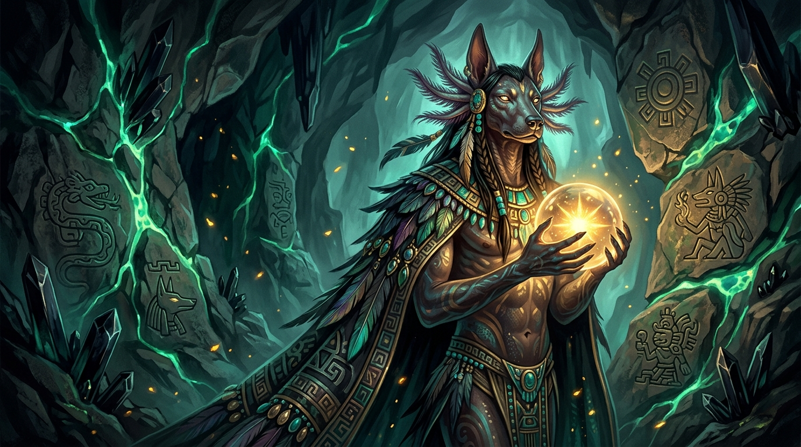

Xolotl Canadian Shield Cooperative es un fideicomiso soberano de datos registrado bajo la legislación de Québec y Canadá. Ningún custodio — incluidos nosotros — puede ser obligado a entregar su texto en claro, porque ningún custodio puede descifrarlo por sí solo.
Los hiperproveedores comerciales están obligados a monetizar datos y cumplir directivas secretas extranjeras. Como cooperativa canadiense, nuestro mandato fiduciario está vinculado criptográfica y legalmente a nuestros miembros institucionales.
Xolotl opera como un repositorio cooperativo de datos sin fines de lucro. No existen accionistas bursátiles ni empresas matrices extranjeras que puedan ser presionadas bajo la ley CLOUD Act o FISA 702 de EE.UU.
Canadá cuenta con estatus oficial de adecuación al RGPD de la Unión Europea. Las operaciones del Escudo Canadiense se adhieren estrictamente a la Ley 25 (Quebec) y PIPEDA, estableciendo una fortaleza jurídica transfronteriza inexpugnable.
Nuestros estatutos exigen que nuestro núcleo de almacenamiento custodie cero claves de descifrado. Incluso bajo orden judicial, nuestros directivos no pueden entregar su texto en claro porque es matemáticamente imposible de reconstruir.

Figura 1: El Principio del Guardián Resiliente. Escoltando datos institucionales a través de redes de tránsito no confiables sin exponer jamás una llave maestra completa.
Los datos empresariales de hoy transitan por terreno hostil: citaciones extranjeras, órdenes extraterritoriales bajo la ley CLOUD Act y ataques destructivos de ransomware. La seguridad tradicional trata las claves de cifrado como vidrio frágil: concentradas en dispositivos únicos, fáciles de coaccionar y catastróficas cuando se rompen. Xolotl transforma la soberanía digital diseñando el sistema para actuar como un organismo vivo y autorregenerativo.
En sistemas antiguos, perder una clave requería revocar toda la bóveda y recifrar petabytes. Con la redistribución de umbral FROST, los fragmentos comprometidos se rotan dinámicamente para hacer matemáticamente incompatibles las claves perdidas, sanando el umbral mientras la bóveda permanece intacta.
Los sistemas de una sola clave concentran el riesgo: una redada física, un ejecutivo bajo coacción o una orden judicial de un solo país pueden forzar el desbloqueo. Un umbral (3, 5) distribuido entre naciones no alineadas (Canadá, Suiza, Islandia) significa que ningún individuo bajo presión puede entregar el texto en claro por sí solo.
Así como Cloudflare ancló célebremente la aleatoriedad digital en la dinámica de fluidos de lámparas de lava, Xolotl fundamenta la resiliencia institucional en la geografía física: el lecho rocoso precámbrico del Escudo Canadiense, bloqueos inmutables por hardware WORM de 93 días y una estricta jurisdicción territorial.
La confianza cero fracasa cuando sobrecarga a los usuarios con frases semilla, llaves USB y rutinas complejas. Xolotl abstrae ceremonias avanzadas de ElGamal de umbral en la experiencia nativa de escritorio de arrastrar y soltar que los equipos ya utilizan a diario.
Infraestructura soberana compartida para organizaciones que no pueden permitirse un solo punto de falla.
Protege el secreto profesional de los abogados durante revisiones antimonopolio y litigios transfronterizos contra el descubrimiento probatorio extraterritorial.
Satisface los requisitos de protección CMMC 2.0 Nivel 2 e ITAR para Información No Clasificada Controlada (CUI) sin costosos enclaves de nube comercial.
Cumple con la Ley Federal Suiza de Protección de Datos (FADP) y el Artículo 48 del RGPD de la UE, protegiendo registros de clientes ante coacción extranjera.
Resiste ataques cibernéticos y extorsión mediante almacenamiento inmutable WORM de 93 días y reversión instantánea al segundo exacto.
Despliegue un nodo dedicado en el Borde Soberano con almacenamiento espejo S3 canadiense y enclaves custodios transfronterizos. Contacto ejecutivo directo: cooperate@xolotl.ca.
RGPD de la UE · Directiva sobre e-Privacidad · FADP Suiza · Adecuación a PIPEDA de Canadá
Este dominio web (xolotl.ca) no emplea Google Analytics, píxeles de Meta ni balizas de marketing de terceros. Las cookies de navegación se limitan estrictamente a preferencias locales de sesión.
Los datos de clientes sincronizados con nuestro clúster de almacenamiento en Montreal se cifran con claves simétricas AES-256-GCM controladas por el cliente derivadas de consenso de umbral multicustodio. La cooperativa no custodia fragmentos descifrables.
Nuestra infraestructura opera exclusivamente bajo las leyes de Québec, Canadá y jurisdicciones neutrales aliadas (Suiza, Islandia). Rechazamos toda citación administrativa extraterritorial que carezca de ratificación judicial interna bajo Tratados de Asistencia Jurídica Mutua (MLAT).
Para paquetes de diligencia debida institucional, contacto con el Delegado de Protección de Datos (DPO) o memorandos de cumplimiento SOC2 / ISO 27001, contacte a nuestra asesoría legal en cooperate@xolotl.ca.